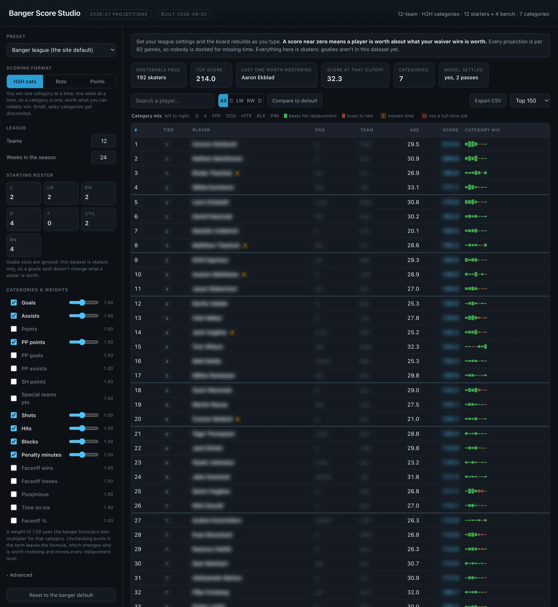
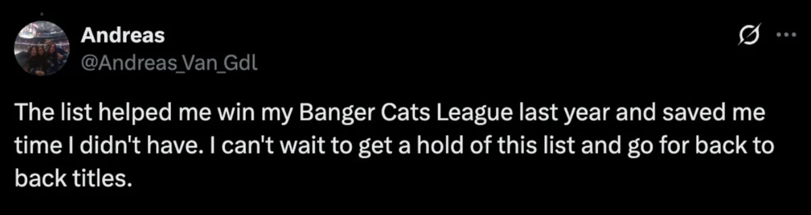
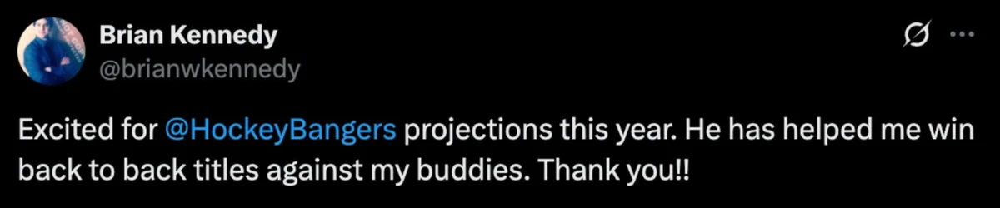
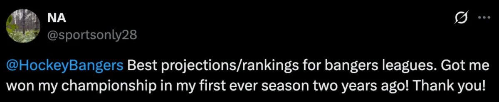
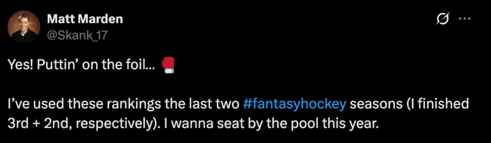
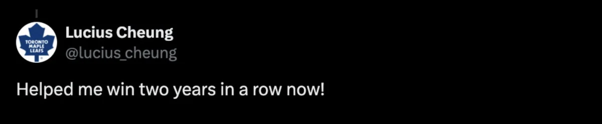
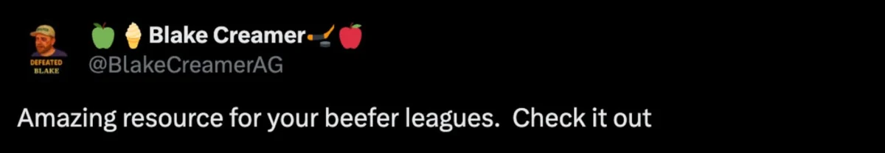
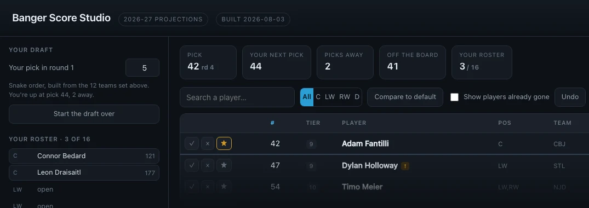
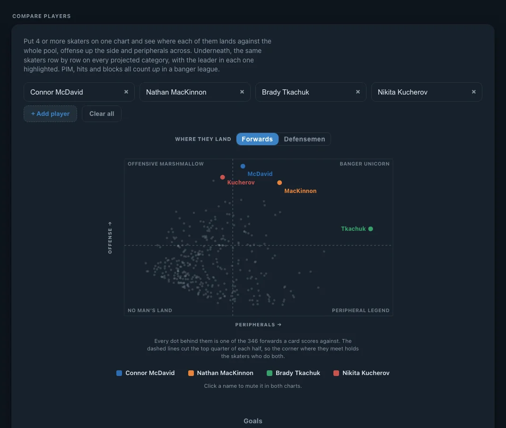

This browser remembers your season password, so all 3 tools sit under Draft Tools in the menu, and the Positional ranking block on a player card and Fantasy rank on the Lines page fill themselves in as you go.
Every projected skater in one spreadsheet. Tell it how your league scores, and all 876 get ranked that way.
$15 USD for the 2026-27 season. One password, every league you play in.
Every ranking runs on roughly the same math. The difference is what goes into it. A model reads last season and nothing else, so 589 players are adjusted by hand for what it can’t see: trades, a new coach, an injury it’s reading as a demotion, a job that opened up in July.
The free site uses these same projections, so you can check the numbers before you buy.
Enter it once and this browser remembers it for the season, on every page.
If you’ve lost your password, email bangersfantasy@gmail.com from the address you bought with and we’ll send it back to you.



These projections will keep moving. We’re working through the league team by team, and every pass changes numbers as lines, roles and power-play units get checked against real usage. Access is for the whole season, so every update lands for you as it ships, at no extra cost.
Posts about last season’s projections, from the people who drafted off them.




Check the ones your league counts and all 876 skaters get rescored against them. If it counts one of them more than the rest, you can say so.
Skaters only. If your league scores anything below, the tools still price every other category, and you fill these in yourself.
Plus/minus and shorthanded points are the soft ones. We tested both against the last 4 seasons: plus/minus repeats at r = 0.34 season over season and shorthanded points at r = 0.20, so each projection is pulled a long way toward the middle and neither one reaches the top of a real season. Use those 2 columns for the order they put skaters in; the number itself carries less weight than the rest of the board. Every other category is projected the same way the free site’s numbers are.


All 876 projected skaters in one spreadsheet, ranked for the way your league actually scores.
$15 USD for the 2026-27 season. One password, every league you play in.